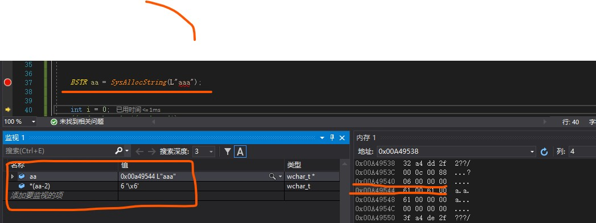

BSTR
为什么需要BSTR
COM是一种跨编程语言的平台，需要提供语言无关的数据类型。多数编程语言有自己的字符串表示。
- C++ 字符串是以0结束的ASCII或Unicode字符数组。
- Visual Basic字符串是一个ASCII字符数组加上表示长度的前缀。
- Java字符串是以0结束的Unicode字符数组。
需要定义一种通用的字符串类型，可以很容易的匹配到不同编程语言。在C++中，就是BSTR。
什么是BSTR
BSTR是“Basic STRing”的简称，微软在COM/OLE中定义的标准字符串数据类型。
对于C++，Windows头文件wtypes.h中定义如下：
typedef wchar_t WCHAR;
typedef WCHAR OLECHAR;
typedef OLECHAR __RPC_FAR *BSTR;;
使用以Null结尾的简单字符串在COM component间传递不太方便。因此，标准BSTR是一个有长度前缀和null结束符的OLECHAR数组。BSTR的前4字节是一个表示字符串长度的前缀。BSTR长度域的值是字符串的字节数，并且不包括0结束符。
由于是Unicode串，所以字符数是字节数的一半。这种方式的优点是允许程序员在BSTR串中间嵌入NULL字符。但是，BSTR的前四个字节表示长度，而OLECHAR数组的前四字节表示前两个字符。这种情况下，对于C++程序，如何实现BSTR和OLECHAR的交换？答案是COM提供了两个BSTR分配用的API：SysAllocString / SysReallocString。函数返回的指针指向BSTR的第一个字符，而不是BSTR在内存的第一个字节。
BSTR的特殊性
BSTR字符串可以内嵌零个或多个NULL，因为决定其长度的不是NULL，而是其前缀保存的数值，所以不能以NULL来判断字符串的结束。；
必须用SysAllocString()和SysFreeString（）函数族来分配和释放，用SysStringLen()等取得字符串的长度；
BSTR相关函数族
内存分配和重分配函数
SysAllocString
SysAllocStringLen
SysAllocStringByteLen
SysReAllocString
SysReAllocStringLen
注：通过以上函数分配空间的同时将根据字符串实际占用的字节数填写前缀
字符串释放函数
SysFreeString
注：这个函数的参数可以传入NULL，即在调用此函数时可以不用判断参数是否为NULL
字符串（占用空间）长度函数
SysStringLen
SysStringByteLen
如何避免BSTR造成的内存泄漏
对于BSTR的管理（申请、释放和计算长度）严格使用上述对应的函数族，不要使用new、delete、CoTaskMemAlloc、CoTaskMemFree、sizeof 等。
不要在BSTR字符串中嵌入NULL
定义BSTR时要赋初值NULL
BSTR bstr = NULL;
调用SysFreeString后要给bstr赋NULL
SysFreeString(bstr)；
bstr = NULL;
不要给BSTR直接初始化字符串
BSTR bstr = L“kkkkkk”;//BSTR bstr = SysAllocString (L“kkkkkk”);
因为直接初始化字符串时前缀的值可能是一个随机数，这样的话，其他地方使用这个BSTR时将无法决定出字符串的长度，特别在跨进程传送数据时将会出现致命错误。
在给一个BSTR赋值前，如果不能确定它目前是否指向一个有效的空间，最好先调一下SysFreeString，如：
SysFreeString（bstr）;
bstr = SysAllocString(L“kkkkkk”);
不要将一个BSTR通过“=”赋给另一个BSTR
bstr1 = bstr2;//bstr1 = SysAllocString(bstr2);
避免调用SysFreeString（bstr1）和SysFreeString（bstr2）对同一块内存空间释放两次。
参数为[out]的BSTR注意点
比如函数GetBSTR([out] BSTR* bstr)
对于客户端
BSTR bstr = NULL；// 传入的bstr必须为NULL
GetBSTR(&bstr);
。。。。。。
SysFreeString（bstr）；// 使用完bstr后别忘了释放
bstr = NULL;
对于服务端
HRESULT GetBSTR(BSTR* bstr)
{
// 一般来说，传入的bstr不指向任何空间应该由客户端保证的，所以下面的判断和释放不是必须的，但有的话可能更安全。
if ( NULL != *bstr )
SysFreeString（*bstr）；
// 创建成员变量的拷贝，不要将其值直接给出去（特别对于进程内组件）
*bstr = m_bstr;// *bstr = SysAllocString( m_str );
}
参数为[in]的BSTR注意点
HRESULT SetBSTR(/*[in]*/ BSTR bstr){
// 如果服务器需要保存传入的bstr供以后使用，必须将成员变量释放，然后重新分配。
SysFreeString(m_bstr);
m_bstr = bstr; // m_bstr = SysAllocString( bstr );
}
参数为[out]的数据结构中包含BSTR的注意点
typedef struct kk{
long i;
BSTR bstr;
} KK;
KK param;
param.bstr = NULL;
GetKK(¶m);
。。。。。。
SysFreeString（param .bstr）；// 这种内嵌在结构体内的BSTR非常容易忽略释放
param .bstr = NULL;
BSTR作为SysAllocString或SysReAllocString的参数时的注意点
如果bstr作为SysAllocString或SysReAllocString的参数传入，并且不确定这个传入的bstr是否包含内嵌NULL时，为保险起见，请务必改用下面两函数。
SysAllocStringLen
SysReAllocStringLen
原因：因为上述4个函数的参数类型都是OLECHAR FAR* 而不是BSTR，但后两个函数多了传入数量的参数。
BSTR的ATL封装类CCOMBSTR
建议：必须在非常清楚CComBSTR各个函数（特别是赋值操作符和构造函数）如何使用和注意事项的情况下才使用它，否则建议使用BSTR，因为使用不慎非常容易造成内存泄漏。
BSTR是一个带长度前缀的字符串,主要由操作系统来管理的,所以要用api.主要用来和VB打交道的(VB里的string就是指它)要操作它的API函数有很多.比如SysAllocString,SysFreeString等等.
vc里封装它的类如_bstr_t,及ATL中的CComBSTR等.
一个 BSTR 由头部和字符串组成，头部包含了字符串的长度信息，字符串中可以包含嵌入的 null 值。
BSTR 是以指针的形式进行传递的。(指针是一个变量，包含另外一个变量的内存地址，而不是数据。) BSTR 是 Unicode 的，即每个字符需要两个字节。 BSTR 通常以两字节的 null 字符结束。 wstr是宽字符，以双字节表示一个字符 bstr是为了与原先的basic字符兼容，它的最前面的4个字节为其长度，以’\0’结束.
ATL基础BSTR CComBSTR SysAllocString
ATL提供了 BSTR 和 CComBSTR ，还有OLEAUTO32.DLL导出一个API叫SysAllocString。这些东西有什么意思？有什么用呢？
BSTR 是一个typedef，你可以理解为 typedef WCHAR* BSTR
它就是一个指针。所以
BSTR p = L”hello”;
编译是没问题的。不过不推荐这么做。因为按MSDN，BSTR应该只接收 SysAllocString 的返回值。
就是说，第一，SysAllocString 的返回值是一个 BSTR 第二，如果我们看到一个BSTR，那它应该总从由一个 SysAllocString 得到的，它总是应该用 SysFreeString 释放。
我们可以想像，SysAllocString 实际上做了一个malloc分配了一块内存，然后把内存长度放第一个DWORD，把这个DWORD后面位置作为BSTR返回。因为在BSTR减4的位置已经保存了块长度，所以对BSTR不应该用 wcslen 之类的方法来得到它的长度，要用 SysStringLen。这就是为什么不推荐用 BSTR p = L”hello”这种方法直接给BSTR赋值，因为这样得到到BSTR不符合减4位置有块长度的规范，也不能用 SysStringLen 得到长度，也不能用 SysFreeString 来释放。乱了规矩。
又一个问题，为什么需要 SysAllocString ? 我用 new 或 malloc 不行吗？因为用ATL常常是为了写COM。而COM控件是跨语言的。你用C++写一个COM控件，可能被HTML中的一个VBSCRIPT或PHP调用。你返回的那个BSTR字串可能需要在VBSCRIPT中释放。而 new 或 malloc 等常规的C++分配内存函数，都要求内存在本模块内释放。所以，SysAllocString 分析的内存，是为了支持跨模块使用，并在外地free的。
那么 CComBSTR 又是什么呢？上面讲了，BSTR只是一个指针，它太简单了。如果我要实现字串查找，字串合并等复杂的操作就要自己写代码了。于是就有了 CComBSTR这个类。它只有一个成员 BSTR m_str 但它有大量的方法函数，足够你所可能需要的所有字串操作。
最后结论：
* BSTR 只是一个指针，要小心使用，除了 SysAllocString 不要对它赋值。
* 如果发现一个 BSTR， 那它一定是用 SysAllocString 得到的。一定要用 SysStringLen 来得到长度。一定要用 SysFreeString 来释放它
* 如果需要对 BSTR 做字串操作，把它变成 CComBSTR ，总有一个现成的函数直接使用。
* 这一系列东西，都是为了COM跨模块把字串当作返回值使用的。如果一个字串只在本模块内有效，还是用 new 或 malloc 或 CString 来得简单。
SysAllocString,SysFreeString大致伪逻辑如下
1 | WCHAR* SysAllocString(WCHAR *str) |

参考：
https://blog.csdn.net/shihuaguo/article/details/8541172
https://bbs.pediy.com/thread-125705.htm
https://www.cnblogs.com/qinfengxiaoyue/p/3428540.html
https://blog.csdn.net/weixin_30478757/article/details/97589060